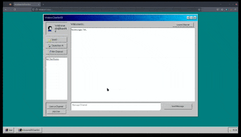

Overview
Features
Advice
StudentName
Windows 69 Chatbot Overview
Welcome to Windows 69 Chatbot Overview
sneak Peak:

Purpose of the Application
Functionality and Operation
Intended Users
Close
Suggested-features
Suggested Features
How the feature works from the user`s point of view
Set of Test cases (Given-when-then Convention)
Close
Advice-groups
Software tools I Recommend using
Tools :
Recommendations for Project Managment
Best practice for prioritizing deadlines and deliverables
Useful resources:
Close
Credits
credits
Close
instructions